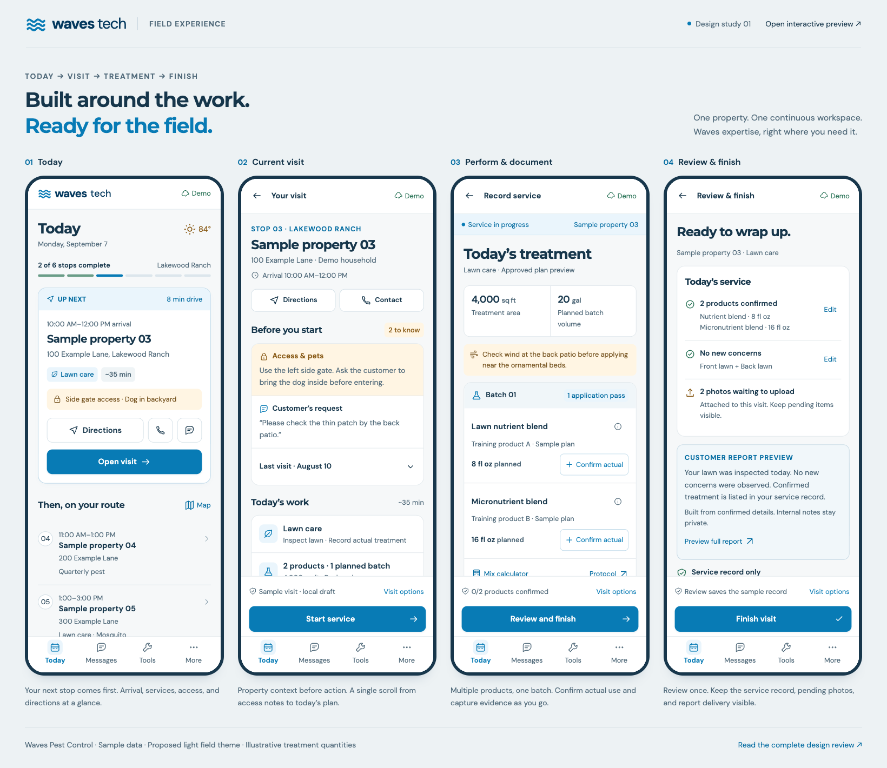
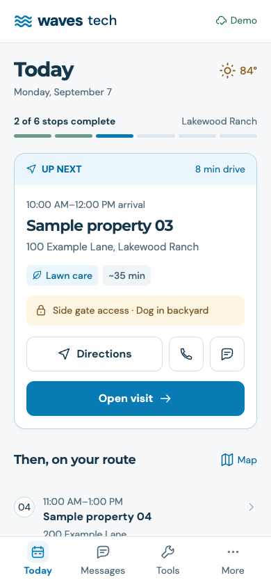
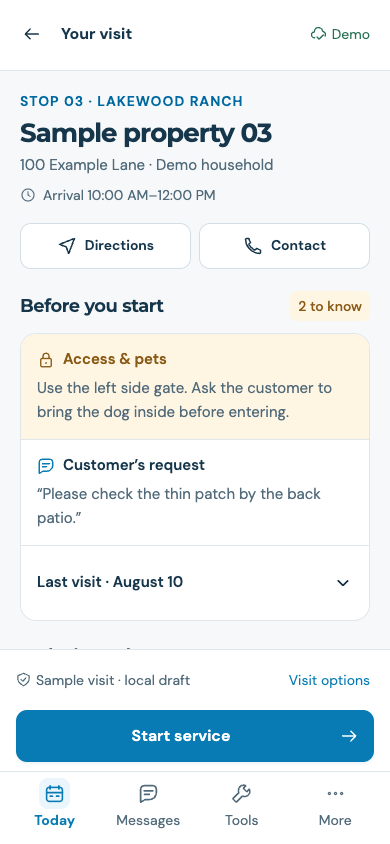
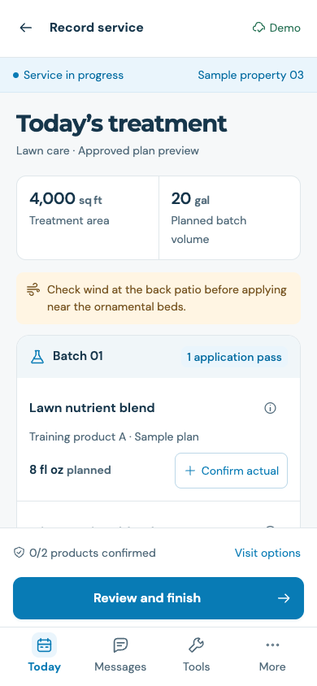
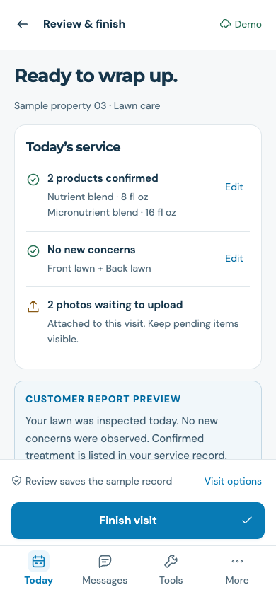
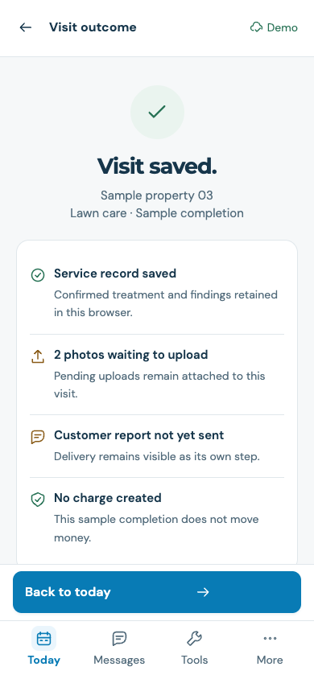

Waves Tech — Public Design Review
A proposed mobile technician portal for Waves Pest Control. The workflow is Today → Current visit → Perform and document service → Review and finish. This page contains static screenshots and the screen text; it can be read without JavaScript, an account, or embedded frames.

01 · Today
See the next stop first, with arrival time, services, access instructions, directions, and contact. The rest of the day is a readable route list.
{kind=link}

Screen text
waves tech Demo Today Monday, September 7 84° 2 of 6 stops complete Lakewood Ranch UP NEXT 8 min drive 10:00 AM–12:00 PM arrival Sample property 03 100 Example Lane, Lakewood Ranch Lawn care ~35 min Side gate access · Dog in backyard Directions Open visit Then, on your route Map 04 11:00 AM–1:00 PM Sample property 04 200 Example Lane Quarterly pest 05 1:00–3:00 PM Sample property 05 300 Example Lane Lawn care · Mosquito 06 2:00–4:00 PM Sample property 06 400 Example Lane Quarterly pest 2 earlier stops completed Design preview · fictional properties Today Messages Tools More
02 · Current visit
Review access and pets, the customer request, previous findings, and scheduled work before starting the service.
{kind=link}

Screen text
Your visit Demo STOP 03 · LAKEWOOD RANCH Sample property 03 100 Example Lane · Demo household Arrival 10:00 AM–12:00 PM Directions Contact Before you start 2 to know Access & pets Use the left side gate. Ask the customer to bring the dog inside before entering. Customer’s request “Please check the thin patch by the back patio.” Last visit · August 10 Today’s work ~35 min Lawn care Inspect lawn · Record actual treatment 2 products · 1 planned batch 4,000 sq ft · Backpack sprayer View treatment plan & protocol Record the service Start service to confirm actual products, record findings, and add visit photos. Design preview · sample visit Sample visit · local draft Visit options Start service Today Messages Tools More
03 · Perform and document service
Keep planned treatment distinct from actual treatment. Confirm actual amounts for multiple products in one batch, select areas, record findings, and add photos.
{kind=link}

Screen text
Record service Demo Service in progress Sample property 03 Today’s treatment Lawn care · Approved plan preview 4,000 sq ft Treatment area 20 gal Planned batch volume Check wind at the back patio before applying near the ornamental beds. Batch 01 1 application pass Lawn nutrient blend Training product A · Sample plan 8 fl oz planned Confirm actual Micronutrient blend Training product B · Sample plan 16 fl oz planned Confirm actual Mix calculator Protocol 0 of 2 products confirmed. Planned products are not recorded as applied. Areas treated Front lawn Back lawn Side lawn What did you find? No new concerns Concern observed Internal field notes · optional Visit photos Add photo Add a photo where you find it. It stays with this visit. Training products · illustrative quantities 0/2 products confirmed Visit options Review and finish Today Messages Tools More
04 · Review and finish
Review confirmed facts once. See actual products, structured findings, pending photos, and a customer report preview before finishing.
{kind=link}

Screen text
Review & finish Demo Ready to wrap up. Sample property 03 · Lawn care Today’s service 2 products confirmed Nutrient blend · 8 fl oz Micronutrient blend · 16 fl oz Edit No new concerns Front lawn + Back lawn Edit 2 photos waiting to upload Attached to this visit. Keep pending items visible. CUSTOMER REPORT PREVIEW Your lawn was inspected today. No new concerns were observed. Confirmed treatment is listed in your service record. Built from confirmed details. Internal notes stay private. Preview full report Service record only Report delivery is a separate outcome. Payment follows existing billing rules. Finish visit confirms this reviewed record. Confirm each product, select treated areas, and record a finding before finishing. Review saves the sample record Visit options Finish visit Today Messages Tools More
05 · Completion outcome
Show the saved record, pending uploads, unsent customer report, and billing outcome separately. A saved visit does not imply every downstream step is complete.
{kind=link}

Screen text
Visit outcome Demo Visit saved. Sample property 03 Lawn care · Sample completion Service record saved Confirmed treatment and findings retained in this browser. 2 photos waiting to upload Pending uploads remain attached to this visit. Customer report not yet sent Delivery remains visible as its own step. No charge created This sample completion does not move money. View saved record Simulate photo sync Next on your route Stop 04 Sample property 04 Quarterly pest · 11:00 AM–1:00 PM Design preview · nothing sent or charged Back to today Today Messages Tools More
Design principles and navigation
- One bottom navigation: Today · Messages · Tools · More. Keep an active visit easy to resume.
- Waves blue and navy on white surfaces. Readable controls, 16 px body/input target, 14 px supporting-label floor, and approximately 50–52 px primary actions.
- Approved plans prefill work; technician confirmation records actual product usage. Multiple approved products may share one batch and one primary pass when the protocol allows it.
- Property access, pet instructions, and customer requests lead the visit. Expand history in place.
- AI assistance is optional. Manual findings, actual amounts, photos, and completion remain the core workflow.
- Keep internal notes private. Build customer report wording from eligible, confirmed structured data.
- Separate service-record save, upload, report-delivery and billing outcomes. Visible pending work supports interruption recovery.
Concept scope
This is a design concept using fictional properties and illustrative training products. Actual photo capture, uploads, offline synchronization, and the proposed Messages inbox are simulated. Sample records stay in the viewer’s browser. No customer communications, appointment changes, or charges occur. Existing Waves permissions, approved protocols, billing rules, and specialized certificate requirements remain implementation constraints.